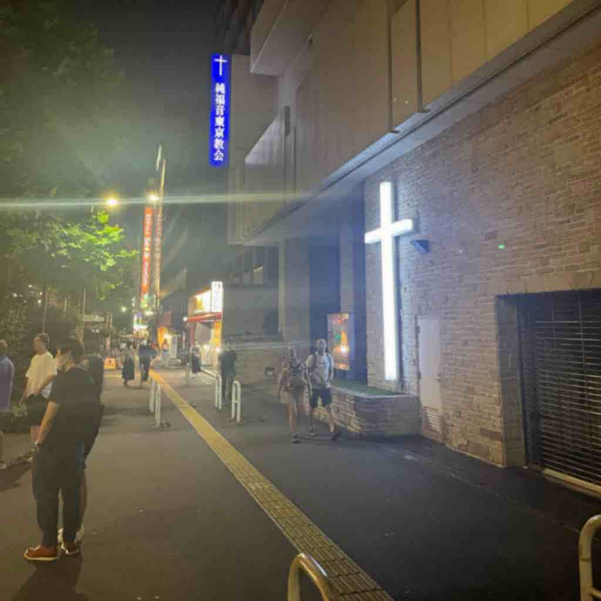
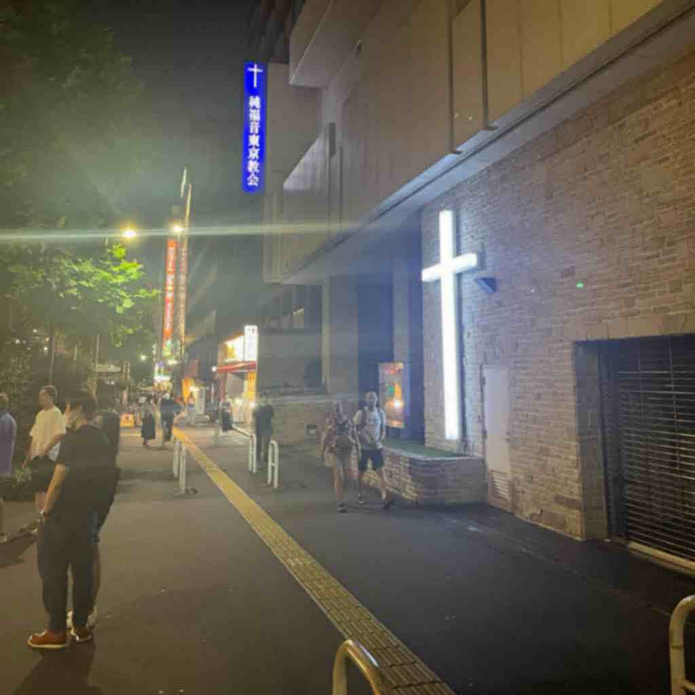

[PINNED] kyoto, japan 7/8/2024
today the date is monday, july 8th. im writing this from a hotel just outside the kyoto rail station, in what will be the first entry in this website.
again i find myself falling into a pit of loneliness, at no fault other than my own. this city doesn't have enough to distract me. recently i've walked so much every day that i can't stay up for long enough to contemplate.
so i write myself another website. new. better. twenty twenty four.
im not fucked up like i was a long time ago. but i did some bad things which i don't think i've quite made up for.
for a while i missed her, and i still do. she was perfect in every way. but not for me.
i hope she doesn't think too poorly of me. i didn't lie. i will always love her.
i hope she doesn't think my final message to her is stupid.
i don't want us to be together again or anything like that.
but i hope i can talk to her again one more time a long time from now.
when i prayed and received my fortune from the temple, i was told that whoever i was looking for would not come. and bad fortune would befall me in the time to come, as it always had. i know what the universe was telling me, and i knew it was true. i wished for the same you see me wish now.
the future stares back at me with gleaming malice.

and i see Her wherever i go.
- anaya khadka 7/8/2024
again i find myself falling into a pit of loneliness, at no fault other than my own. this city doesn't have enough to distract me. recently i've walked so much every day that i can't stay up for long enough to contemplate.
so i write myself another website. new. better. twenty twenty four.
im not fucked up like i was a long time ago. but i did some bad things which i don't think i've quite made up for.
for a while i missed her, and i still do. she was perfect in every way. but not for me.
i hope she doesn't think too poorly of me. i didn't lie. i will always love her.
i hope she doesn't think my final message to her is stupid.
i don't want us to be together again or anything like that.
but i hope i can talk to her again one more time a long time from now.
when i prayed and received my fortune from the temple, i was told that whoever i was looking for would not come. and bad fortune would befall me in the time to come, as it always had. i know what the universe was telling me, and i knew it was true. i wished for the same you see me wish now.
the future stares back at me with gleaming malice.

and i see Her wherever i go.
- anaya khadka 7/8/2024
[PINNED] the last call - read this after everything else.
so this message, the one that you should be reading last, is gonna be written over a few days, in between the other entries where i feel a bit more
cynical, maybe revised a few times to make it more accurate to how i feel. as i write this first paragraph, it's the 10th of july.
i think it's about time i move on from this whole thing. everything. forget about you until the 17th of january and just hope that you end up seeing all of this. i do love you, holly. i think i've made that clear. but past the melodrama, i don't want my mind to linger on this too much longer. i already feel like i'm making this whole experience overstay its welcome.
all the emotions i've written are real, and i am being genuine when i write them to you. it was the first time in a long time that i thought of my own morality and the way my emotions work in terms of guilt.
you are a great, great person. and i miss you. even when i don't feel particularly soapy i miss you. so i know i'm being real. i have never ever made this much of an effort for anybody; the email, this website, any of it. i promise you that i won't do anything like this for anybody else ever again. pinky promise.
but im ready to move on with my life. you are always welcome in my arms, duh, but i need to stop with this whole sadness thing. it's been a few weeks, and it should be over. i'm a stud. i shouldn't be acting like this!
i really hope u get to see this, all of it. and i really hope you appreciate it for what it is and don't find me weird. i think this we be the 33worlds.net homepage for a fair bit, and then it'll be accessible with a password or something or through a subdomain idk.
we will be happy without one other, and that's okay. i still remember how mad we made each other. i wish i could hold u again when u were angry, comfort you like u wanted me to. you were my baby.
we really broke each other down, i think.
but i'm trying to keep this one more lighthearted. i don't feel too bad.
you would've really loved tokyo i think. i know i would've loved to explore it with you. it is sakura-chan's home!!! the small kawaii girl locked up in your heart. we would've had so much fun in shinjuku trying out all the different foods and in shibuya going shopping at the big department stores and then also the little places in daikanyama and shimokitazawa. it's such a holaya city. so much to do and explore, not like our virginia.
i have a bunch of things i want to do, including working on and future-proofing the truck and my motorcycle, adding radios and all kinds of gizmos to them. i have some new ideas for how to dress and so much more. the future isn't looking bad at all.
so, when your next fuck ass boyfriends break up with you, they're not gonna top this one. ever. i made sure of it. if you want to save this whole website, it's available for download right here. so then you can see what i've made for you whenever and wherever!
on top of that, no future girlfriend of mine is gonna get treatment like this. no websites or emails for them. this is for you holly. all for you. you are my specialest girl.
i know i already gave you a proper goodbye in the email, but i'm gonna say it again. i love you so much angel. i *loved* you so much. i'm sorry things didn't work out between us. please talk to me just one more time in my life, anytime. i would really appreciate catching up with you.
- with love, anaya
i think it's about time i move on from this whole thing. everything. forget about you until the 17th of january and just hope that you end up seeing all of this. i do love you, holly. i think i've made that clear. but past the melodrama, i don't want my mind to linger on this too much longer. i already feel like i'm making this whole experience overstay its welcome.
all the emotions i've written are real, and i am being genuine when i write them to you. it was the first time in a long time that i thought of my own morality and the way my emotions work in terms of guilt.
you are a great, great person. and i miss you. even when i don't feel particularly soapy i miss you. so i know i'm being real. i have never ever made this much of an effort for anybody; the email, this website, any of it. i promise you that i won't do anything like this for anybody else ever again. pinky promise.
but im ready to move on with my life. you are always welcome in my arms, duh, but i need to stop with this whole sadness thing. it's been a few weeks, and it should be over. i'm a stud. i shouldn't be acting like this!
i really hope u get to see this, all of it. and i really hope you appreciate it for what it is and don't find me weird. i think this we be the 33worlds.net homepage for a fair bit, and then it'll be accessible with a password or something or through a subdomain idk.
we will be happy without one other, and that's okay. i still remember how mad we made each other. i wish i could hold u again when u were angry, comfort you like u wanted me to. you were my baby.
we really broke each other down, i think.
but i'm trying to keep this one more lighthearted. i don't feel too bad.
you would've really loved tokyo i think. i know i would've loved to explore it with you. it is sakura-chan's home!!! the small kawaii girl locked up in your heart. we would've had so much fun in shinjuku trying out all the different foods and in shibuya going shopping at the big department stores and then also the little places in daikanyama and shimokitazawa. it's such a holaya city. so much to do and explore, not like our virginia.
i have a bunch of things i want to do, including working on and future-proofing the truck and my motorcycle, adding radios and all kinds of gizmos to them. i have some new ideas for how to dress and so much more. the future isn't looking bad at all.
so, when your next fuck ass boyfriends break up with you, they're not gonna top this one. ever. i made sure of it. if you want to save this whole website, it's available for download right here. so then you can see what i've made for you whenever and wherever!
on top of that, no future girlfriend of mine is gonna get treatment like this. no websites or emails for them. this is for you holly. all for you. you are my specialest girl.
i know i already gave you a proper goodbye in the email, but i'm gonna say it again. i love you so much angel. i *loved* you so much. i'm sorry things didn't work out between us. please talk to me just one more time in my life, anytime. i would really appreciate catching up with you.
- with love, anaya
lack of understanding
night of july 9th, hotel in kyoto, japan
there were many things that she never understood about me. the one i've been thinking of the most is the whole "slime" thing with my friends. whenever i'd start singing a song like it and she would shut me down immediately because "that's something for u and ur friends, not us." she always wanted to be special, and for our things to be above all else. and they were. but i could never make her understand that.
that whole thing - everytime i did that thing around her, i had either just gotten back from my friends, or was trying to show her what i meant.
whenever i thought of her when i was with my friends, i'd sing one of our songs. but i didn't want to be made fun of for singing stupid girl songs so i would disguise them that way. i don't know why i never spoke up to make her know that. i know she'd have loved to hear it. she is special. she always was.
there has to be countless misunderstandings like that between the two of us, things which stopped us from really understanding how we loved one another. they all seem so dumb looking back at it. i wish i could have just made it work, but we were so chronically dysfunctional it was crazy. i never really felt loved for who i was when i was with her, even when she became desperate and began going through the phases of breakup in the last days together. i was so cold to her. i was so over the anger and resentment she displayed to me. but i wish i could hear her express her affection to me one last time. i am sorry.
even still, at times i am still mad at her, but i still miss her. and other times i don't know if i've been making these feelings up just to be dramatic. i can't tell anymore.
looking back on that year is so crazy. we could have had a baby this month. our sapna. i am so sad. i would've married her. i want to do everything for her. but it's far too late and i've fucked up too much.
i stare at the html i've written. 9:39 pm japan standard time.
all from these mistakes i've made. misunderstandings we had. our sad story.
miracles, and crosses.
- ak
there were many things that she never understood about me. the one i've been thinking of the most is the whole "slime" thing with my friends. whenever i'd start singing a song like it and she would shut me down immediately because "that's something for u and ur friends, not us." she always wanted to be special, and for our things to be above all else. and they were. but i could never make her understand that.
that whole thing - everytime i did that thing around her, i had either just gotten back from my friends, or was trying to show her what i meant.
whenever i thought of her when i was with my friends, i'd sing one of our songs. but i didn't want to be made fun of for singing stupid girl songs so i would disguise them that way. i don't know why i never spoke up to make her know that. i know she'd have loved to hear it. she is special. she always was.
there has to be countless misunderstandings like that between the two of us, things which stopped us from really understanding how we loved one another. they all seem so dumb looking back at it. i wish i could have just made it work, but we were so chronically dysfunctional it was crazy. i never really felt loved for who i was when i was with her, even when she became desperate and began going through the phases of breakup in the last days together. i was so cold to her. i was so over the anger and resentment she displayed to me. but i wish i could hear her express her affection to me one last time. i am sorry.
even still, at times i am still mad at her, but i still miss her. and other times i don't know if i've been making these feelings up just to be dramatic. i can't tell anymore.
looking back on that year is so crazy. we could have had a baby this month. our sapna. i am so sad. i would've married her. i want to do everything for her. but it's far too late and i've fucked up too much.
i stare at the html i've written. 9:39 pm japan standard time.
all from these mistakes i've made. misunderstandings we had. our sad story.
miracles, and crosses.
- ak
a recurring memory
morn of july 9th, kyoto (not the first time i've thought this but the day which i chose to write about it):
something she kept repeating over and over and over in the last month or two we were together was how she was "so grateful that her parents exposed her to a wide variety of foods at a young age" so she could enjoy all the foods she finds yummy now.
this was in response to the fact that *i* don't really like eating out at restaurants or trying new foods or really eating at all that much... which is fine to bring up of course but she NEVER stopped bringing it up. like ANY time she would be eating something herself she be like hm.. "im so grateful my parents ..."
it's one of those things which in the moment are whatever - like i wasn't really annoyed or anything but i definitely noticed how much she brought it up and after a while it was just like "yes babe" "ur so right babe" "yes my angel" and she would make this matter-of-fact face when i agreed with her.
but i guess in hindsight it was kind of cute.

(hint: if u hover ur mouse on images some of them talk!!!)
- ak
something she kept repeating over and over and over in the last month or two we were together was how she was "so grateful that her parents exposed her to a wide variety of foods at a young age" so she could enjoy all the foods she finds yummy now.
this was in response to the fact that *i* don't really like eating out at restaurants or trying new foods or really eating at all that much... which is fine to bring up of course but she NEVER stopped bringing it up. like ANY time she would be eating something herself she be like hm.. "im so grateful my parents ..."
it's one of those things which in the moment are whatever - like i wasn't really annoyed or anything but i definitely noticed how much she brought it up and after a while it was just like "yes babe" "ur so right babe" "yes my angel" and she would make this matter-of-fact face when i agreed with her.
but i guess in hindsight it was kind of cute.
(hint: if u hover ur mouse on images some of them talk!!!)
- ak
prior to vacation
i can't fucking find the dickies shirt she bought for me. what the fuck.
an (old?) email
a copy of the email scheduled to send to her on the 17th of january, twenty twenty *five*.